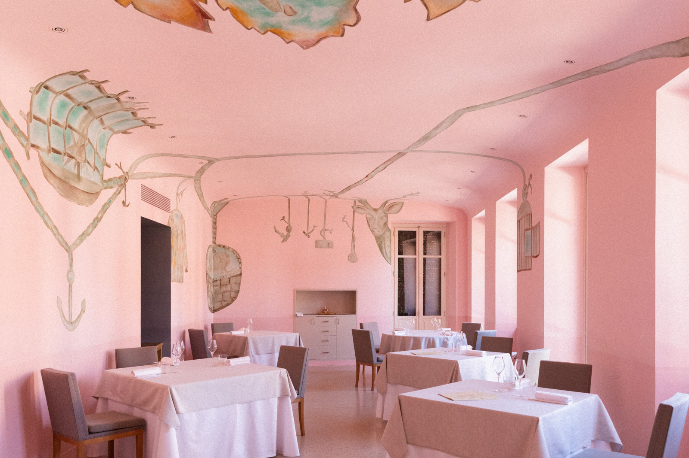

★★★
Piazza Duomo
Enrico Crippa · Ceretto family
Piazza Risorgimento 4, Alba — walkable from any Alba hotel [3]
Menus
The Journey (8 courses) · Seasonal Things (11 courses) · Barolo · Art Bites (lunch) [4]
Price
from €290 per cover · no-show fee €290 [5]
Open
Wednesday–Saturday, lunch 12:30 and dinner 19:30
Booking
Full month released at once, 10 AM Italy time — fills within hours of opening
Book Piazza Duomo → dinner is walkable from any Alba hotel. The car becomes a day-trip tool only. Garden-driven, art-filled rooms — Piedmont's reference table since 2012.